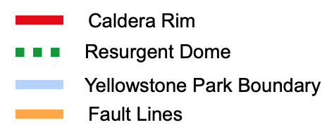
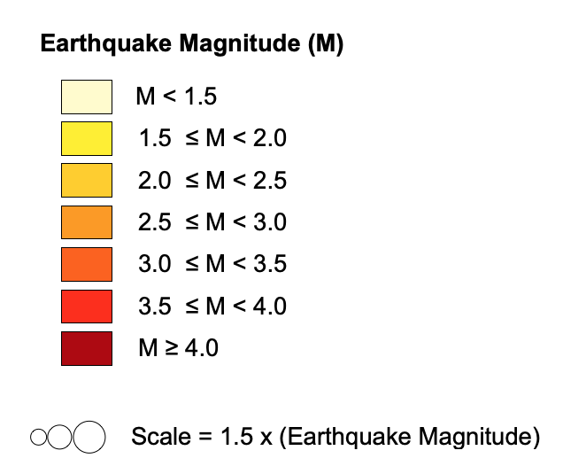
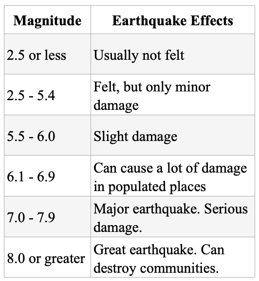

|
Distribution of all Earthquakes in Yellowstone National Park during 2019 The Yellowstone Caldera is outlined in red. This is the most recently formed caldera, others have been omitted. The Sour Creek and Mallard Lake Resurgent domes are outlined in green. These domes form when magma rises to the shallow levels beneath a caldera and slowly reinflate the previously deflated magma resevoir, pushing the ground upwards to form a dome. |


 |
|
Earthquake Data retreived from USGS Earthquake Search Catalog, https://earthquake.usgs.gov/earthquakes/search/, on November 22, 2020. Yellowstone National Park boundary, Caldera boundaries and fault lines retreived from Wyoming State Geological Survey website, https://www.wsgs.wyo.gov/pubs-maps/gis, on November 22, 2020. Information and dates on the Yellowstone volcano retreived from, https://www.nps.gov/yell/learn/nature/earthquakes.htm and https://www.nps.gov/yell/learn/nature/volcano.htm, on November 22, 2020. Earthquake Magnitude scale informaiton retreived from, https://pubs.usgs.gov/fs/fs100-03/, on November 22, 2020. |